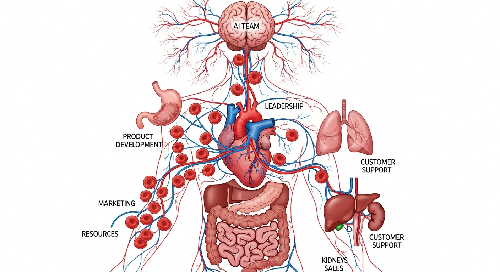

Building AI-native organizations requires all three disciplines: AI PM decides how to structure teams for AI product development and what capabilities to build internally; Vibe-Coding experiments with organizational patterns to test what actually improves velocity; AI Engineering implements the tools, infrastructure, and standards that enable AI-native ways of working.

Use vibe coding as a skill development tool for building AI capabilities across your organization. Teams that vibe code together develop intuition for AI strengths and limitations faster than those who only read documentation. Vibe coding skill development creates shared mental models, establishes common vocabulary, and builds the organizational judgment needed for AI product success.
Objective: Build organizational structures that enable AI product success through capability mapping, hiring, standards, and knowledge management.
Chapter Overview
This chapter covers capability maps and skill taxonomies, hiring profiles for AI roles, internal standards and governance frameworks, and building skills repositories and organizational memory.
Four Questions This Chapter Answers
- What are we trying to learn? How to build organizational capabilities that enable sustained AI product success beyond individual talent.
- What is the fastest prototype that could teach it? Creating a capability map of your current AI team strengths and gaps to identify critical hiring and development priorities.
- What would count as success or failure? Organizational knowledge that persists beyond individual contributors and standards that scale across teams.
- What engineering consequence follows from the result? Individual AI talent is not enough; organizational structure and knowledge management determine long-term AI product success.
Learning Objectives
- Create capability maps that define organizational AI needs
- Develop hiring profiles for AI product roles
- Establish internal standards and governance frameworks
- Build skills repositories and organizational memory systems
Sections in This Chapter
Cross-References
- Chapter 28: Team Topologies and AI-Native Operating Models - Team structures and collaboration patterns that capability maps inform
- Chapter 27: Post-Launch Learning Loops - How production learning feeds organizational knowledge
- Chapter 25: Governance and Compliance - Foundational governance frameworks that internal standards operationalize